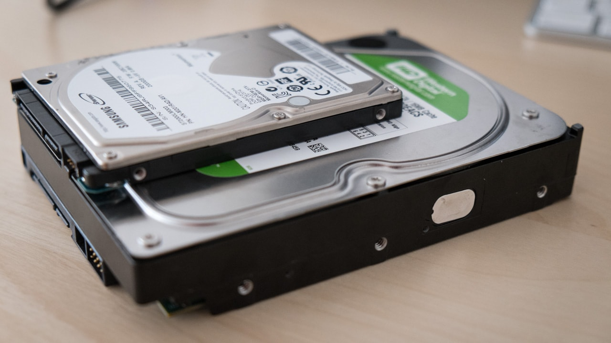
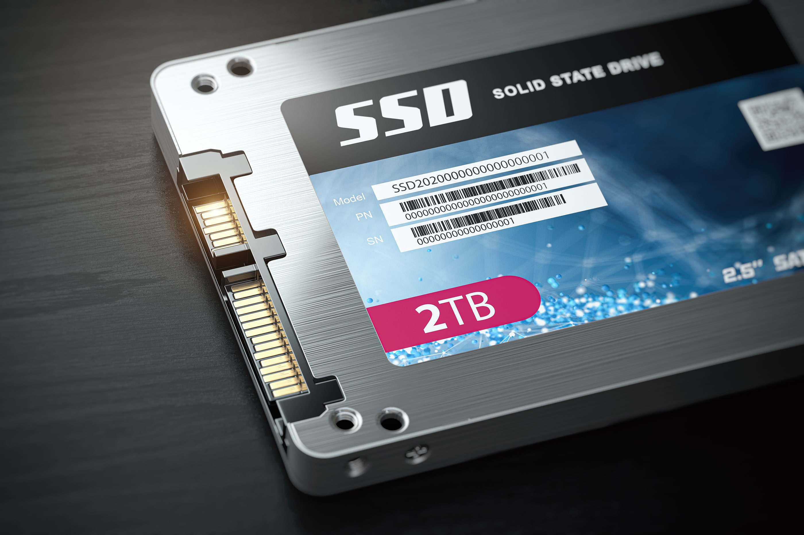
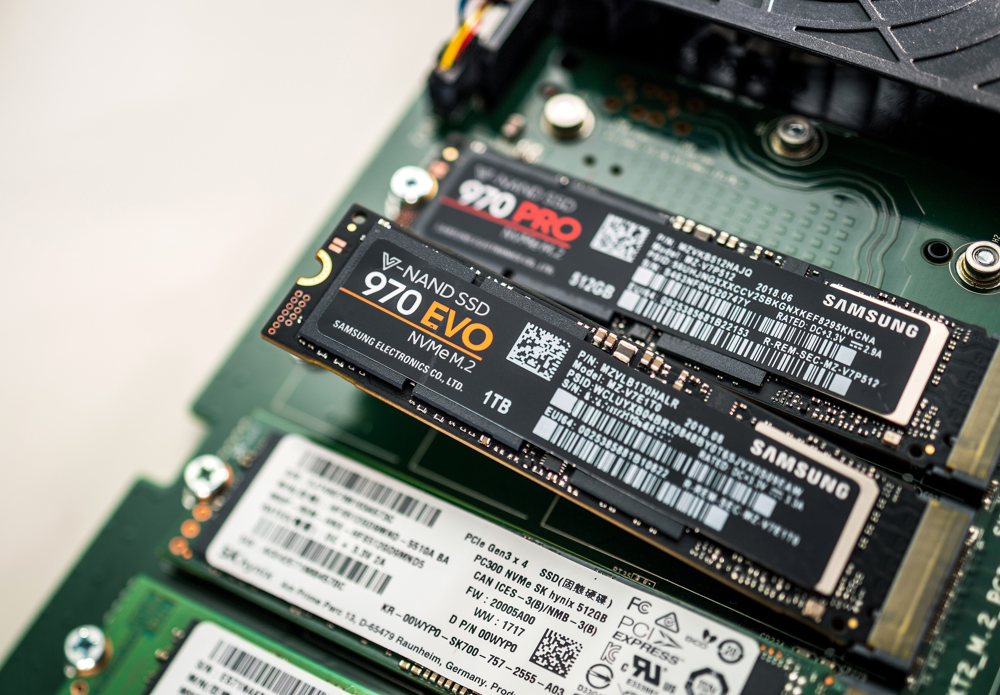

Storage



There are two types of storage: long-term and short-term. The photos above show long-term storage.
It is a process in which digital data is saved within a storage device. Media storage is the place where things go when the
microprocessor isn't working on them and can be retrieved later. It can also be internal (inside the computer hardware) or external
(installed outside, without opening the computer)
Different Types of Long-Term Storage Drives:
- + Hard Disk Drive (HDD) - (examples: 2.5-inch drive and 3.5-inch drive)
- + Solid State Drive (SSD) - (examples: SATA, PCIe, M.2, etc.)
- + Flash Memory Drives - (examples: USB flash drive, SD cards, etc)
- + Virtual Drive
- + Cloud Storage - (Dropbox, iCloud, Google Drive, etc.)